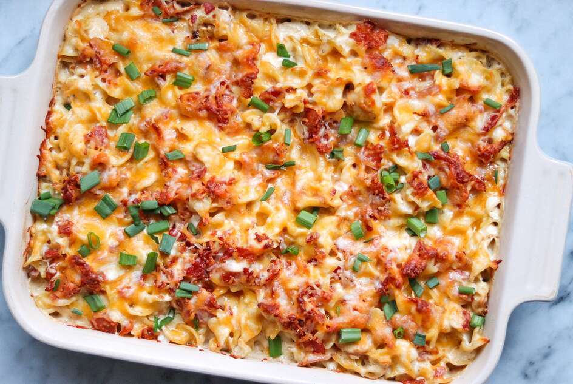

Ranch Chicken Casserole with Bacon

This dish is very yummy! How can anyone go wrong with chicken and bacon!
I would recommend this dish for anyone who wants to make a delicious bite
for their kids.
This meal is easy to prepare, as all you need is
chicken and bacon!
Proceed with caution though, this is also a very oily dish!
Ingredients:
- 1 (12 ounce) package wide egg noodles
- 1 pound bacon
- 2 tablespoons olive oil
- 4 skinless, boneless chicken breasts, cubed
- 1 tablespoon lemon-pepper seasoning
- 1 (16 ounce) container fat-free sour cream
- 1 (10.75 ounce) can condensed cream of chicken soup
- 1 Cup Milk
-
1 (1 ounce) package ranch dressing mix (such as Lipton® Recipe Secrets®)
- 2 green onions, diced
- 1 ½ cups shredded Colby-Monterey Jack cheese
Steps to make this dish
- Preheat the oven to 350 degrees F (175 degrees C)
-
Fill a large pot with lightly salted water and bring to a rapid boil.
Cook egg noodles at a boil until tender yet firm to the bite, 7 to 9
minutes.
-
Meanwhile, place bacon in a large skillet and cook over medium-high
heat, turning occasionally, until evenly browned, about 10 minutes.
Drain bacon slices on paper towels. Crumble.
-
Heat oil in a skillet over medium-high heat. Place chicken in the hot
skillet, sprinkle with lemon-pepper, and brown on all sides, 5 to 7
minutes. Remove with a slotted spoon and place in a 9x13-inch baking
dish.
-
Combine 1/2 of the crumbled bacon, sour cream, soup, milk, and ranch
dressing mix in a bowl and mix until blended. Pour over chicken, add
drained egg noodles, and stir. Sprinkle remaining bacon on top, cover
with Colby-Jack cheese, and top with green onions.
-
Bake in the preheated oven until cheese is melted and chicken is no
longer pink in the center, about 30 minutes.
- You're done!